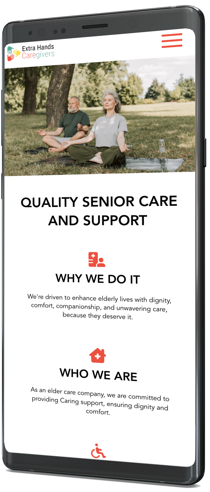

Extrahands Website

Outside of my regular work at Digital Seat, I was offered an additional project by my boss, which involved assisting one of his close friends. The task was to transform his WordPress ideas and designs into a functional, responsive website suitable for viewing on tablets and mobile devices. Using Vue.js for the project was particularly enjoyable. It took approximately three weeks to complete the project. This timeframe encompassed not only developing the desktop version but also ensuring the website was user-friendly across laptops, tablets, and mobile devices.
Extrahands Mobile
Due to the tight deadline for this project, there wasn't enough time for multiple iterations of low and high-fidelity wireframe mock-ups, which typically would have been created in Figma and then prototyped. Instead, I had to dive right in and begin working. Fortunately, the initial layout was already completed in WordPress. My task was to recreate it in Vue while enhancing its functionality, aesthetics, structure, and organization. I started with the desktop version, focusing initially on creating components for the header and footer to house navigation items and footer information, respectively. I then outlined the various page views: home, about, services, and contact. With the header and footer established across the entire site, I proceeded to populate the body with relevant information for each page view.
After completing the desktop version, which was optimized for large monitors, I proceeded to adapt the site for laptop, tablet, and mobile views using appropriate media query dimensions. It was crucial to carefully consider each device's layout to ensure logical flow and placement of elements. Precision in alignment and spacing was essential to achieve a polished and professional appearance. Click the "View Project" button to explore more of the site, navigate through different links, and observe its performance on various devices!